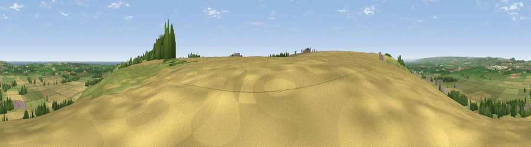

Viewpoint near Flixton
#6374 in England · top 16% of its area beats it · near FlixtonWhere it is
The exact computed spot (TA 05650 78938). Click the marker for map links.
The view, rendered

A 360° render of this exact spot computed from the terrain model, tree cover and land cover — summer colours, afternoon light, calibrated against photographs of famous viewpoints. Real trees, hedges and buildings will differ in detail.
The panorama
Grey silhouette: terrain skyline in each direction (720 bearings, Earth curvature and refraction included). Dashed green: skyline with trees (+15 m) and buildings (+8 m) as obstacles. Blue strip: how far the ground is visible on each bearing.
Where the view opens
Wedge length = distance to the farthest visible ground on that bearing (vegetation-aware). Rings at 10, 25 and 50 km.
What fills the view
44% cropland · 43% grassland · 8% woodland · 3% built-up · 3% water
Angular shares of the visible panorama (visual magnitude), not map area. Landscape diversity 0.49 (0–1 Shannon).
Key numbers
More beautiful places nearby
The staircase of upgrades: each row has a higher view potential than everything closer. Driving times are estimates from straight-line distance, calibrated against real road routing — check an actual route before setting out.
| Place | Direction | Drive | Score |
|---|---|---|---|
| Viewpoint near Muston | E · 2 km | ~5 min | 70.9 |
| Viewpoint near Osgodby | NNE · 6 km | ~12 min | 73.0 |
| Viewpoint near Osgodby | N · 6 km | ~13 min | 74.0 |
| Viewpoint near Osgodby | N · 7 km | ~14 min | 75.6 |
| Olivers Mount | N · 8 km | ~16 min | 80.3 |
| Viewpoint near Ravenscar | NNW · 23 km | ~38 min | 82.7 |
| Viewpoint near Ravenscar | NNW · 24 km | ~39 min | 87.3 |
| Viewpoint near Ravenscar | NNW · 25 km | ~41 min | 90.0 |
54.19532, -0.38213 · source: screening · position refined by local search. Computed location — check access rights before visiting.